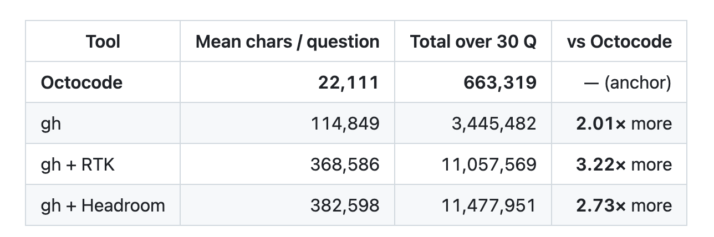

August: on 30 GitHub questions, Octocode beat gh, gh + RTK and gh + Headroom.

30 questions × 3 runs · seed 42 · Octocode v18.1.1 CLI · blind gpt-5.5 judge See the 30 questions ↗ octocode-benchmark/compare/github-questionsCorrectness ≈ 9 / 10 for all: the difference is the context bill.
Then we loop: change a tool, re-run the same questions, keep only what improves.